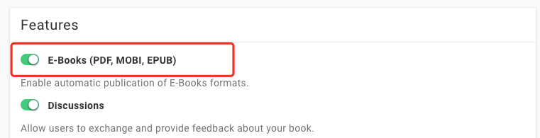
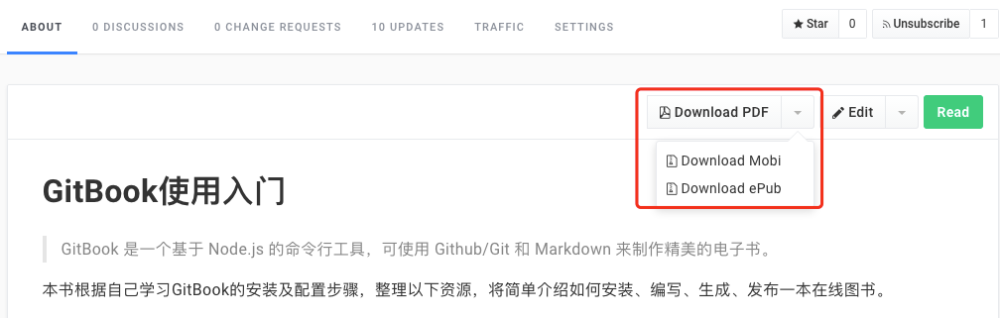

输出类型及方法
GitBook可以把你的书本生成为不同格式的电子书。
如果你的电子书，发布在Gitbook上，则可以通过setting中

打开导出PDF, MOBI, EPUB支持，sava 后，就可以在项目首页直接导出
静态网站
这是默认的格式。它生成一个可交互的静态站点。通过$ gitbook serve 或者 $ gitbook build 命令生成静态网站
PDF (Portable Document Format)
Portable Document Format (PDF) 是一以一种独立于软硬件，以及操作系统的方式来保存文档的格式。这是一种很普遍的格式。文件拥有的扩展名为.pdf。
输出为PDF文件，需要先安装gitbook pdf
$ npm install gitbook-pdf -g
然后，用下面的命令就可以生成PDF文件了。
$ gitbook pdf {book_name}
如果，你已经在编写的gitbook当前目录，也可以使用相对路径。
$ gitbook pdf .
然后，你就会发现，你的目录中多了一个名为book.pdf的文件。
ePub (electrontic publication)
EPUB (electrontic publicaton的简称，有时称它为epub) 是一个由国际电子出版物论坛 (IDPF) 制定的免费并开放的电子书标准。文件拥有的扩展名为.epub，苹果和谷歌的设备支持ePub格式。
Mobi (Mobipocket)
Mobipocket电子书格式是基于使用XHTML的开放电子书标准，并且可以包含JavaScript以及框架。亚马逊的设备 (Kindle) 支持这样的格式。